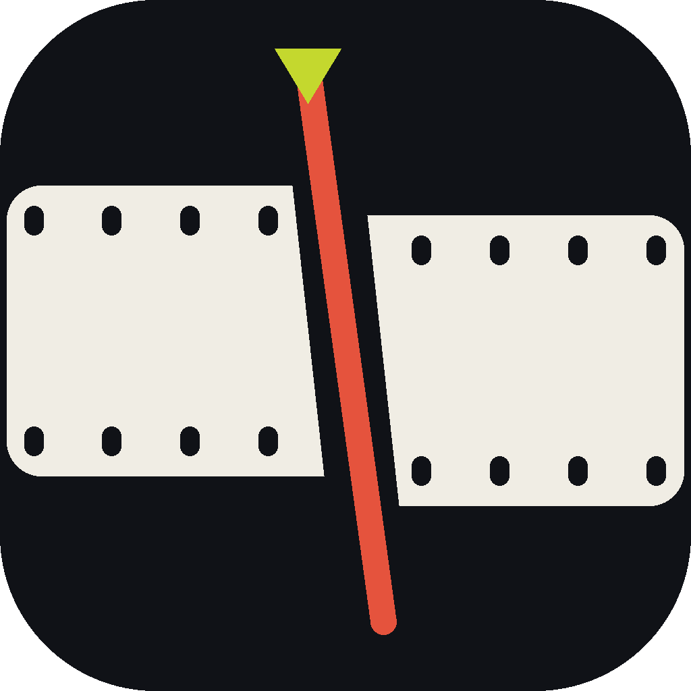

FINAL.mp4
Scenes
Overlays
Captions
Cuts
Framing
Zooms
Audio

CutrightDrop in a recording. Cutright builds the master, writes the transcript, and lets you edit by reading it — delete a sentence and the video cuts itself. Captions, cuts, motion graphics and the grade all live in one file your AI agent can edit too.
Select a rambling sentence, press ⌫. The cut ripples through every caption, scene and overlay.
Finds real dead air in the waveform plus “um”s and stutters. Hear each one before you accept it.
Highlight styling per cue — position, size, colour, emoji. Rebuilt from the transcript in one click.
Template packs bring lower thirds, title cards and callouts. Type your text, it renders onto the timeline.
Film, teal & orange, noir, VHS, grain and vignette — applied at render time, never baked in.
Run claude beside the timeline and ask for the edit in plain English. It changes the same project.
Viddescriptor is the AI Media Studio behind Cutright — generate images and video from a prompt, bring a still photo to life, and build a whole shot list without a camera. Then bring it straight back here to cut, caption and ship it.
Start from a recording, or reopen a project you already made.
A project folder holds project.json (the edit),
graded_master.mp4 (the picture) and your exports. It is a plain folder — you can
move it, back it up, or hand it to claude in the terminal.
Takes about as long as the video itself: the master is hardware-encoded and transcription runs locally, so nothing is uploaded.